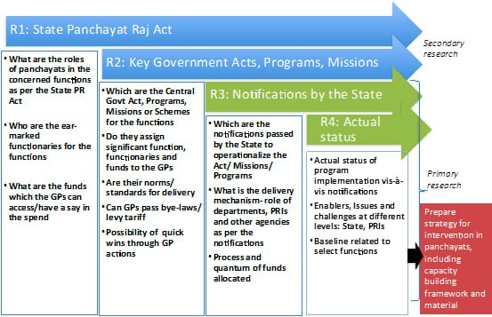

Application of organisation development principles in public institutions necessarily requires an exhaustive understanding of the legal framework in which the institution is placed. It helps gain better appreciation of the opportunities, challenges as well as boundaries to be considered while designing the change processes. For e.g., in the case of rural local governance, there are many externalities which impact functioning of Gram Panchayats: Is there an enabling legal devolution to the Panchayati Raj Institutions by the State Government? Even in the presence of enabling legal mandate, does the State administration provide space to the panchayats to function as institutions of local self government, or are the panchayats primarily implementation arms of the State? Is there an aware citizenry which performs its role as an oversight body, through various mechanisms instituted in the Panchayat Raj Acts, such as Gram Sabhas, Beneficiary committees etc.? Do the panchayats have access to information to aid their decision-making?
Read MoreOverview of our approach to analyse legal framework related to rural local governance:
Core team

Sonali Srivastava
Founder and CEO
|
Sonali founded Anode to help harness the capacities of local institutions, and mainstream local institutions towards the end of inclusive and effective governance. She has been instrumental in conceptualising the Gram Panchayat Organisation Development (GPOD) framework, an organisational capacity development tool that helps transform Panchayats into responsive units of self-governments.
Read MoreSonali has 25+ years of experience as a development & management professional. She has previously worked at Asian Paints (India) Ltd, Barefoot College Tilonia, Eicher Consulting Services, Arghyam and Avantika Foundation. She is a Director on the Board of Trickle Up India (can add link), which is committed to bringing the ultra-poor out of poverty, Governing Council member of India Panchayat Foundation, an independent non-partisan, pan-India multi-stakeholder platform to strengthen Panchayati Raj Institutions, and Member of the TIDE General body, a development organisation that leverages technology for conserving environment and addressing societal issues.
Sonali holds a Personnel Management and Industrial Relations degree from XLRI Jamshedpur and a Masters in Development Studies from SOAS, University of London.
Sonali is a keen yoga practitioner, enjoys singing sessions, lending her voice too at times. She loves the calm and quiet of the outdoors and has dreams of making it to the Everest base camp sometime in her life!

Hemant Sharma
Advisor (Founding Team)
|
Hemant advises Anode on organisation building with a focus on Panchayats prioritising education. He works as an advisor with NGO's and educational institutions like Chirag, MEC College, Saandeepani School, CDLG and Avantika Foundation and has also been a visiting faculty at Indian Institute of Management, Bangalore, for their PGSEM program. He has 28 years of experience as a HR professional across industries like automobile, pharmaceutical, telecom, FMCG, IT, test & measurement and medical technology.
Read MoreWith assignments in both Indian and multinational companies, the last 14 years of his career were as Head of the HR function at Sun Microsystems India and as Vice President - HR, Danaher, India.
He has an MBA from XLRI, as well as a Master’s degree specialisation in Education, from Azim Premji University. His human resource training gives him a keen insight into the challenges of human capital availability and development.

Pragya Pathak
Project & Change Management Lead (Founding Team)
|
Pragya is a social researcher with over 15 years of experience in designing and implementing projects. She develops and designs the project frameworks and implementation strategies for the project teams. Her experience spans a wide range of sectors including institutional strengthening, governance, gender, and labour rights both in formal and informal sectors across urban and rural settings.
Read MoreShe is analytical and skilled in problem-solving, qualitative research methodologies, project and team management. She has a master's degree in sociology from Jawaharlal Nehru University and a bachelor's degree in History from Delhi University (Lady Shri Ram College).
Her personal interests include exploring new cultures and environments, reading, water sports and cooking.

Divya Krishnakumar
Divya Krishnakumar
|
Divya anchors the research and partnership verticals at Anode. She works on research and design of Anode’s projects in Jharkhand, Madhya Pradesh and Karnataka. Her role also involves grant conceptualization, mapping stakeholders and fostering alliances with key funders and partners.
Read MoreShe has 8 years of experience in the social impact, sustainable construction and ecological sectors. She has worked in Barefoot College, Tilonia, and as a freelance architectural designer for various clients.
Her work reflects her critical thinking, project management skills, and attention to detail. Divya has a Bachelor’s in Architecture from MS Ramaiah Institute of Technology and has completed a certificate course on Decentralised water and sanitation from UNESCO- IHE, Netherlands.
Divya loves to read, paint and explore traditional knowledge and skills in rural areas.

Lingadevaru ES
Project Manager
|
Lingadevaru is the project manager for Anode’s Chitradurga project. He
implements the project and helps design new initiatives.
He has over 15 years of experience implementing projects in education and
local governance in Prajayatna, where he worked closely with their partners
Pradan and TRIF. He also worked as a Project Manager in BUZZ India. His
experience spans Karnataka, Andhra Pradesh, Jharkhand, Madhya Pradesh, Uttar
Pradesh and Rajasthan.
He is also an advisor to ORDER Tumkur, a volunteer at Gandhi School of Natural Farming, Tumkur and a promoter with Tumkur Organics.
Lingadevaru is a fast learner, skilled facilitator and team player. He holds a postgraduate degree in Environmental sciences from Bangalore University and Post graduate Diploma Degree in Journalism and mass communication from Karnataka state open University.
He is passionate about working with communities, natural farming, trekking and travelling.

Ravi D.
Senior Field Coordinator
Ravi was the first member of our field team in Chitradurga. His
understanding of the local context has played an integral role in initiating
our interactions with GPs.
He has 12 years of experience working closely with various community and
government stakeholders, during his time with Prajayatna and Akshara
Foundation
Ravi is meticulous, skilled at mobilising communities and a fast learner. He has a B. Ed. From Revanasiddeswara college, Bengaluru.
He enjoys staying updated on current issues, travelling to new places, listening to music and watching movies.

Lingaraju, a member of our field team in Chitradurga and is handholding 5
Gram Panchayats here though the 3-year GPOD journey.
He has worked as a lecturer in Polytechnic College Chitradurga, as a
vocational trainer to underprivileged youth, a teacher training coordinator
with Government of Karnataka and also a trainer to Taluk and Zilla Panchayat
elected members.
Lingaraju is a skilled trainer and fast learner. He has a Diploma in Automobile Engineering from Rural polytechnic, Haveri and Bachelor in Automobile Engineering from Malnad College of Engineering, Hasan.
He is interested in learning about new developments across the social sector and politics.

Deepa supports the team in community mobilisation and research of
stakeholders such as CBOs, to make our initiatives more effective.
She has over 7 years of experience working with DATA charitable society,
Rural Literacy & Health Programme, as an auditor in the MGNREGA program
and Suchethana Network.
Deepa is an avid learner and passionate about her work. She holds a B.A. from Government Arts College, Chitradurga and Masters in Social work from Davangere University.
Her interests include listening to music and reading books.

Madhusudhan S
Field Coordinator
Madhusudhan is a member of our field team in Chitradurga and is building the
capacity of 5 Gram Panchayats in Challakere Taluk through the 3- year GPOD
journey.
He has more than 10 years of experience working in the field of education as
a coordinator across various taluks of Chitradurga District with Niru
Nirmalikarana, Edutel Technology, KHPT and Pratham foundation.
He has great problem solving and interpersonal skills. Madhusudhan has a B.Sc. from SJM College, Chitradurga and B.Ed. from SVC, Chitradurga.
He enjoys playing cricket and badminton. He also practises agriculture outside of his professional work.
Friends & Collaborators

Dr. Anjali Karol Mohan led research and policy initiatives at Anode Governance Lab where she brought her deep understanding of government functioning along with facilitative pedagogy to guide the work at different stages of Anode’s work. Over the past three decades Anjali’s research and practice has straddled the broad areas of development, urbanisation and urban management, organisational and institutional frameworks, public policy and information and communication technologies and development (ICTD). She is currently working at the intersection of urbanisation, climate change and informality aiming to evolve a bottom-up planning framework for cities. Anjali is a geographer with an urban and regional planning degree from the School of Planning and Architecture, New Delhi. She has a PhD on (e)Governance and public policy from IIIT Bangalore.

Padmavathy Bareddy worked as a Coordinator- Project and Change Management at Anode. During her time in Anode, she oversaw our project in Jharkhand, and also worked on new solutions related to Information Technology. Her work experience includes stints at IBM and Dhwani RIS. Padma has a Master’s in Public Policy and Governance from Azim Premji University, Bangalore, and Bachelors in Computer Engineering from Pune Institute of Computer Technology, Pune University, Pune.
Board members
Milind Chalisgaonkar is a board member of Anode Governance Lab’s
non-profit arm - Anode Governance Foundation. He is a management consultant,
independent director and mentor with experience in multiple sectors. He has
held CEO level positions from 1993 to 2009. His experience has been in
building winning teams in startup companies as well as existing
organisations. His forte is turning businesses around as well as growing new
businesses at a rapid pace.
Since 2010 he has successfully mentored several CXOs in the IT, BPO,
Consulting, Financial services, Manufacturing, FMCG and Contract Research
industries. He is an Independent Director at Allsec Technologies Ltd (listed
BPO service provider), Infrasoft Technologies Ltd., Navi General Insurance
Ltd. as well as the Director/ Co-Founder of Spark Career Mentors Pvt. Ltd.
Milind has completed his B.Tech (Ceramics) from Indian Institute of
Technology at BHU, Varanasi (1981-85). He has a Post Graduate Diploma in
Business Management (MBA – Marketing Systems) from XLRI, Jamshedpur
(1987-89).
Parveen Sikand is a board member of Anode Governance Lab’s non-profit
arm - Anode Governance Foundation. She has been a social worker, funding
collaborator and teacher since 1986. Her career has included deep engagement
with communities and their challenges, facilitating forums for various
stakeholders, liaising funding opportunities with stakeholders and NGOs, as
well as children’s education.
Parveen's experience includes rights-based work with SRUTI (Society for
Rural Urban Tribal Initiative), program analyst for Bharatiya Yuva Shakti
Trust (in partnership with CII), volunteer with SWRC (Social Work &
Research Center/ Barefoot College), Tilonia, Rajasthan. During this time,
she formalised and headed the SAMPDA Network consisting of 16 NGOs
associated with SWRC. Parveen has also worked with IndiaCares Foundation and
has set up Child for Life in St. John’s Academy of Medical Sciences, and
more recently associated with their medical teams for disaster relief work.
Parveen also taught at KFI, the Valley School in Bangalore and conducted
workshops for teachers at Vivek High School, Chandigarh. She is also on the
Board of Omarela Trust and SKID (Sheila Kotawala School for the Deaf).
Parveen completed her B.Sc in Anthropology from London University in 1986.